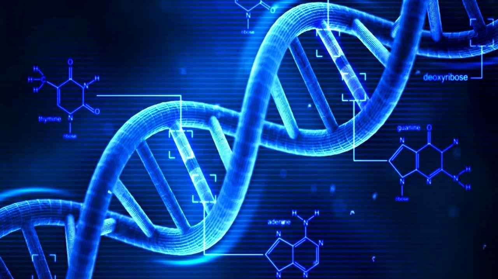

DNA, or deoxyribonucleic acid, is the hereditary material in humans and almost all other organisms. Nearly every cell in a person’s body has the same DNA. Most DNA is located in the cell nucleus (where it is called nuclear DNA), but a small amount of DNA can also be found in the mitochondria (where it is called mitochondrial DNA or mtDNA).
The information in DNA is stored as a code made up of four chemical bases:
Human DNA consists of about 3 billion bases, and more than 99 percent of those bases are the same in all people. The order, or sequence, of these bases determines the information available for building and maintaining an organism, similar to the way in which letters of the alphabet appear in a certain order to form words and sentences. DNA bases pair up with each other, A with T and C with G, to form units called base pairs. Each base is also attached to a sugar molecule and a phosphate molecule. Together, a base, sugar, and phosphate are called a nucleotide. Nucleotides are arranged in two long strands that form a spiral called a double helix. The structure of the double helix is somewhat like a ladder, with the base pairs forming the ladder’s rungs and the sugar and phosphate molecules forming the vertical sidepieces of the ladder. An important property of DNA is that it can replicate, or make copies of itself. Each strand of DNA in the double helix can serve as a pattern for duplicating the sequence of bases. This is critical when cells divide because each new cell needs to have an exact copy of the DNA present in the old cell.